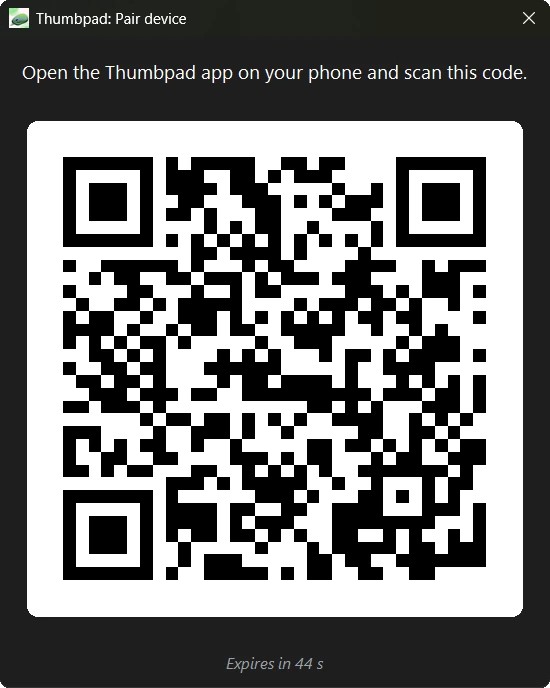

Thumbpad
Mach dein Android-Handy zu Trackpad, Tastatur und Fernbedienung für Medien und Lautstärke an deinem Windows-PC, ganz einfach über dein WLAN zu Hause.
Für Windows herunterladenWindows 10 oder 11 · kostenlos · in Sekunden installiert
Einrichtung im Video
So richtest du es ein
- Starte ThumbpadSetup.exe. Die Datei ist noch nicht digital signiert, deshalb zeigt Windows eventuell dieses blaue Fenster: Klicke auf Weitere Informationen und dann auf Trotzdem ausführen.
 1
1
 2
2
- Klicke auf Next und dann auf Install. (Das Installationsprogramm gibt es bisher nur auf Englisch.) Fragt Windows, ob Änderungen zugelassen werden sollen, klicke auf „Ja“, damit Thumbpad mit Windows startet. Zum Schluss öffnet sich ein Kopplungsfenster mit einem QR-Code.
 1
1
 2
2
- Wenn Windows nach dem Netzwerkzugriff fragt, klicke auf Zulassen. Dein Handy verbindet sich über dein lokales WLAN mit dem PC.

- Installiere die Thumbpad-App aus Google Play auf deinem Android-Handy. Handy und PC müssen im selben WLAN sein.
- Tippe in der App auf PC koppeln und scanne den QR-Code auf deinem PC. Das musst du nur ein einziges Mal machen.

Die App fürs Handy
Thumbpad für Android
Kostenlos bei Google Play. Kopple sie mit der Windows-App von oben.